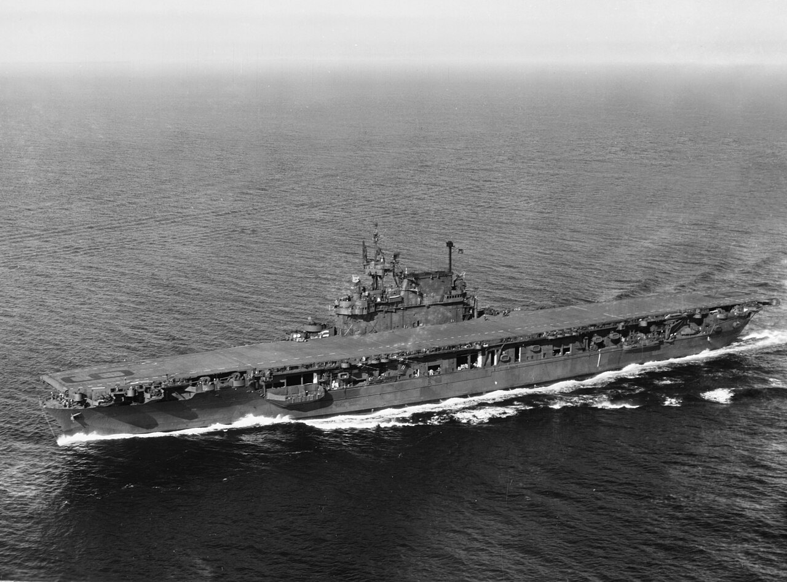

USS Enterprise (CV-6)
El portaviones más condecorado de la US Navy, participó en casi todas las acciones importantes del Pacífico, incluyendo Midway y Guadalcanal.

El buque y su grupo aéreo
El CV-6 pertenecía a la clase Yorktown. Su capacidad de combate dependía del buque, las aeronaves y la coordinación de su personal.
Campañas del Pacífico
Participó en Midway y en operaciones relacionadas con Guadalcanal. Su historial de 1942 también incluye Santa Cruz y los combates de las Salomón.
Reconocimiento y posguerra
Recibió veinte estrellas de batalla por su servicio en la Segunda Guerra Mundial. Tras la guerra ayudó al regreso de militares a Estados Unidos.
El portaviones como sistema operativo
La capacidad militar del Enterprise dependía de sus aviones, de las tripulaciones aéreas y de la organización de la cubierta de vuelo. Recuperar aeronaves, rearmarlas y preparar nuevas salidas exigía coordinación con los hangares y los talleres. Los buques de escolta proporcionaban protección y contribuían a las operaciones de la formación; el portaviones no actuaba como una unidad autosuficiente.
Sostenimiento de las operaciones
Las campañas del Pacífico exigían combustible, munición, repuestos y reparaciones a distancias enormes de las bases principales. La disponibilidad de una cubierta de vuelo dependía también de la conservación de sus instalaciones y de la recuperación tras sufrir daños. La trayectoria del Enterprise permite relacionar la acción de combate con el esfuerzo de los equipos de mantenimiento y de la red logística.